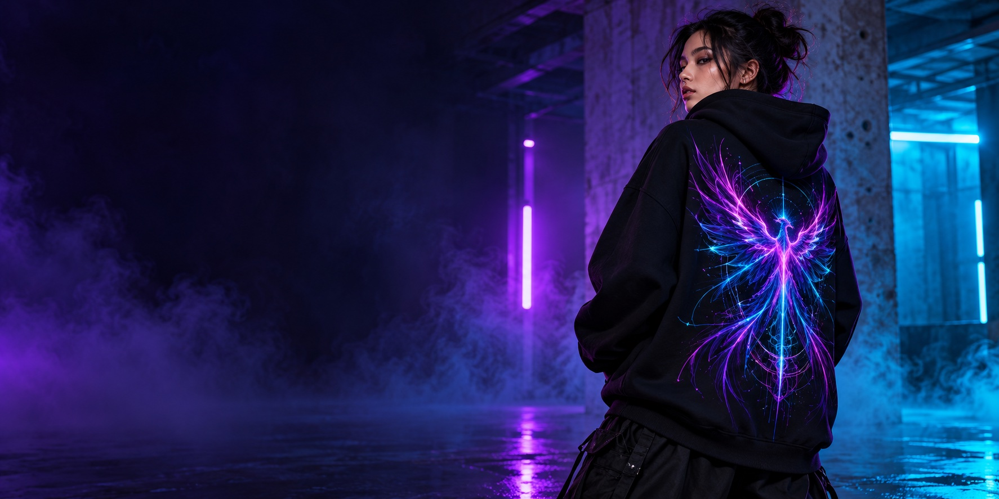

Touch it. Wear it.
Compare fabric hand-feel, drape, opacity, seams, fit, and shrinkage across supplier samples. A listed fabric weight is only one clue, not proof of quality.
 ANYONE CAN BEA SUPERHERO
ANYONE CAN BEA SUPERHEROAnyone Can Be a Superhero is a working name for a tiny independent studio in Thane. The idea is simple: start with original worlds, make fewer things with more care, and build toward the licensed collector pieces fans keep asking for.

FIRST ART DIRECTION / ORIGINAL CONCEPT / 2026Compare fabric hand-feel, drape, opacity, seams, fit, and shrinkage across supplier samples. A listed fabric weight is only one clue, not proof of quality.
Approve the actual print method, color, placement, and durability on the garment we plan to sell. Reject samples that crack, fade, or feel wrong.
Use a simple checklist for stitching, sizing, stains, print defects, packaging, and consistency. Keep a batch record so problems can be traced and fixed.
Start with two or three original designs and a small run or made-to-order test. Ask people to vote, order samples, measure real production and shipping costs, and restock only the designs that customers actually keep wearing.
Want a real, metal, series-accurate ring or thoughtful apparel references? Those belong in a licensed collection. First create proof that your shop can make and sell good products responsibly.
Clear your store name. Create original artwork. Produce samples with a local manufacturer and record material/quality specs.
Collect verified sales, repeat customers, audience data, marketing plans, forecasts, and a quality-control process. Keep invoices and supplier records.
Prepare the product category, designs, territory, sales channels, manufacturing partner, forecasts, and budget. Ask about approval steps, royalties, minimum guarantees, insurance/compliance, and reporting.
Do not manufacture or list protected product art before the written license and design approvals cover the exact products, region, channels, and term.
Licensed ring research: DC Shop currently lists a stainless-steel *Lanterns* power ring with gold ion plating and green enamel for US$70; its page says shipping is within the U.S. That is a quality reference and demand signal, not a viable ₹1,500 resale cost. View DC Shop listing ↗
For later research, WBD provides a Consumer Products licensing inquiry route ↗ and Disney directs product-rights inquiries through its Consumer Products contact page ↗. Follow each rights-holder’s current inquiry process; acceptance and terms aren’t guaranteed.